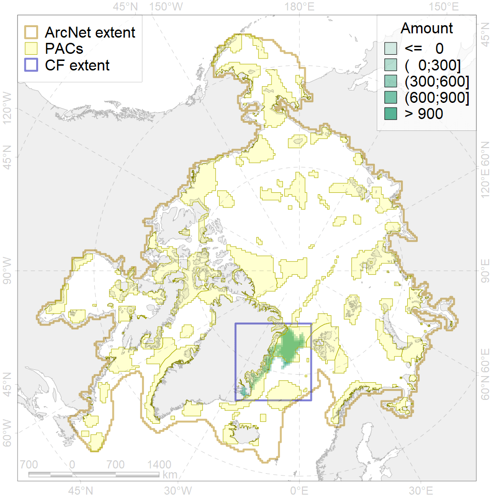

2059

| CF code | 2059 |
| CF name | Harp seal foraging areas in Greenland as predicted by MIZ distribution |
| Time Period | 1979-2017 |
| Source(s) | Trukhanova; Platonov (MIZ data) |
| Seasonality | July-October |
| Depth Horizon | 0-400m |
| Methodology | Extert input; surrogate data; data compilation |
| Use Restrictions | Surrogate data provided by Nikita Platonov and available for PANPAN project participants |
| Author Name | Irina Trukhanova |
| Notes | |
| Scenario’s Target | 0.12 |
| Target Achievement | 0.883 (Scenario: 736.0%) |
| PAC | Share of the Total Amount within the PAC | Share of the Target Achievement for the ArcNet | PAC’s Contribution to the Target Achievement |
|---|---|---|---|
| 29 | 71.0%73.5% | 575.6%596.5% | 78.2%81.0% |
| 30 | 0.0%0.0% | 0.0%0.0% | 0.0%0.0% |
| 32 | 17.4%20.2% | 139.7%163.4% | 19.0%22.2% |
| 33 | 1.2%2.1% | 10.4%17.8% | 1.4%2.4% |
| inner | 89.6%95.9% | 725.7%777.7% | 98.6%105.7% |
| outer | 10.4%11.8% | 10.3%21.9% | 1.4%3.0% |
| † supplement values are for area consistence whereas principal values are for Accenter compatible gridded stats |